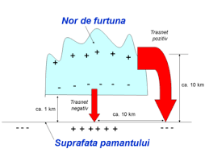
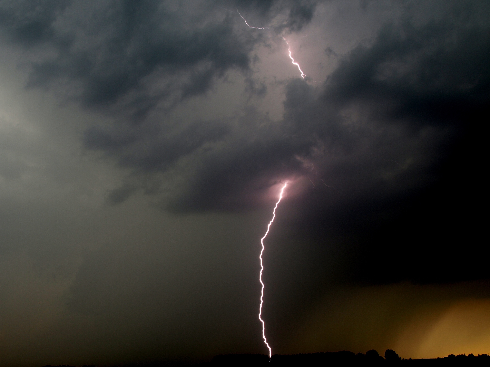
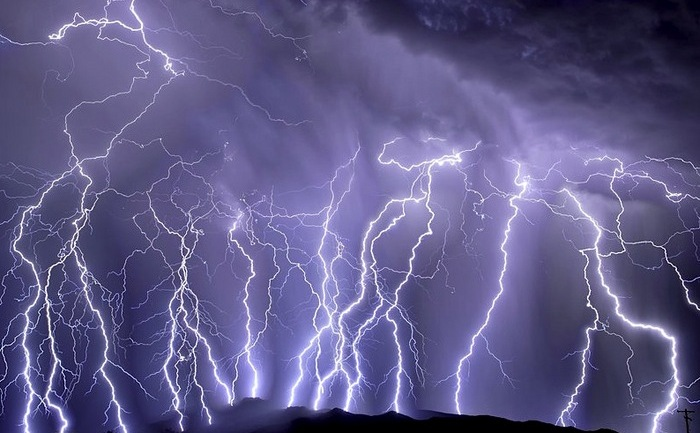
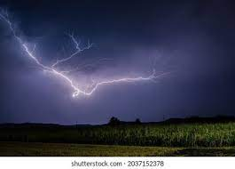
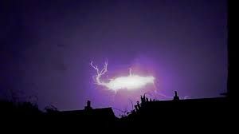

Fulgerul este un arc electric, luminos, rezultat în urma unui proces de descărcare electrică între nori, cauzat de o diferență de potențial electrostatic. Acest fenomen meteorologic are loc în natură între nori încărcați cu sarcini electrice diferite.
Deși fulgerele sunt diferite de trăsnete, în care se creează o legătură intensivă electric între nor și pământ (în esență), toate descărcările electrice sunt la fel. Un canal ionizat prin care se descarcă o cantitate mai mare sau mai mică de electricitate. Dar, diferența dintre fulgere și trăsnete este că acestea au loc în interiorul unui singur nor de furtună (cumulonimbus) sau între doi sau mai mulți nori, pe când trăsnetul are legătură directă cu pământul și este responsabil de moartea anuală a multor oameni. Așadar, aici vor fi incluse doar tipurile de descărcări electrice care se realizează în nor/nori, între regiuni diferite încărcate electric (fulgere).

Cel mai comun tip de descărcare este cel în interiorul unui singur nor de furtună, care sare între diferite regiuni încărcate din nor. Fie toate părțile canalului, fie doar o parte din acestea pot fi ascunse în interiorul norului și pot sau nu pot fi vizibile pentru observatorul de pe pământ. A nu se confunda cu fulgerele dintre doi sau mai mulți nori.
Acest tip de fulger are loc între doi sau mai mulți nori de furtună complet separați, fiind un eveniment relativ rar. Poate avea loc la orice altitudine de formare a fulgerelor în interiorul norului, dacă condițiile necesare sunt prezente. A nu se confunda cu fulgerele în nor care sunt cele mai comune și apar într-un singur nor de furtună.
Deși toate fulgerele sunt la fel, mai jos sunt prezentate câteva variații observaționale ale fulgerelor, acestea fiind într-o oarecare măsură diferite de fulgerele clasice menționate mai sus.
Deși numele este ciudat, acest tip de descărcări se potrivesc perfect numelui. Sunt orizontale, asemenea unui copac, care au loc în interiorul unui nor și a cărei propagare poate fi văzută cu ochiul liber. Cu alte cuvinte, mișcarea acestor fulgere pe cer este suficient de înceată (în comparație cu alte tipuri de fulgere), încât un observator de pe pământ sau o cameră cu o viteză normală îi poate capta mișcarea pe cer. Acest tip de fulger deseori acoperă distanțe foarte mari, rezultând într-o vastă și spectaculoasă imagine produsă pe cer. Fiind fulgere de altitudine foarte mare, tunetul produs de acestea poate fi auzit de observatorul de pe pământ de cele mai multe ori ca un sunet calm, nu puternic și asurzitor ca în cazul unui trăsnet între nor și pământ.
Acest tip de fulger este unul rar, descris ca o sferă plutitoare, iluminată, care apare în timpul furtunilor. Se poate mișca rapid, încet sau poate staționa, poate fi tăcută sau poate produce un sunet de sâsâit sau de pocnet, poate trece prin ferestrele deschise, poate dura de la câteva secunde la câteva minute, poate dispărea încet sau brusc, fie fără niciun sunet, fie cu un sunet puternic de explozie sau lovitură. Până în momentul actual acest fenomen există doar pe baza mărturiilor oamenilor, care pretind că l-au observat, și nu există nicio dovadă concludentă a existenței acestuia. Nicio fotografie sau videoclip nu au fost vreodată făcute reprezentând acest fenomen. În cele mai multe cazuri în care oamenii au raportat că au văzut această bilă misterioasă nu au fost nimic mai mult decât simple confundări cu evenimente actuale și care se pot întâmpla în timpul unei furtuni, cum ar fi scurtcircuitul liniilor de înaltă tensiune rezultând într-un arc electric provocat de vântul intens, de un trăsnet ș.a.m.d.
| În mitologie | Etruscii considerau fulgerele ca oracol care le prezicea viitorul. Așa numitele libri fungurales descriu indicațiile (informațiile) transmise prin fulgere. |
| Fulgerele au fost observate și categorisite încă din anii 800-600 î.e.n.. | Vechii germani considerau fulgerele ca semn al zeului Thor, care aruncă ciocanul său spre pământ. Slavii aveau zeul Perun ca zeu al furtunii. La fel Zeus și Jupiter sunt reprezentați însoțiți de fulgere în perioada Renașterii. Zeii furtunii sunt Zeus, Jupiter și Donar, iar saxonii înainte de creștinism considerau stejarul ca arbore sfânt sau zeu al furtunii. |
| În iudaism, creștinism și religia islamică | În Biblie fulgerele și tunetele sunt o solie care exprimă mânia lui Dumnezeu (2. Moise 9,24; 2. Samuel 22,15; Iov 37; Psalm 18) și pedeapsa Domnului (Zaharia 9,14) de exemplu izgonirea din cer a lui Satan (Luca 10,18) sau învierea în prezența îngerului (Hes 1,14; Daniel 10,6; Matei 28,3). |
În timp ce observarea fulgerelor este sigură, deoarece acestea nu pot răni observatorul, trebuie ținut cont de faptul că toate tipurile de descărcări electrice au loc în interiorul aceluiași nor de furtună (sau a mai multor nori de același tip), care pot provoca în orice moment un trăsnet.